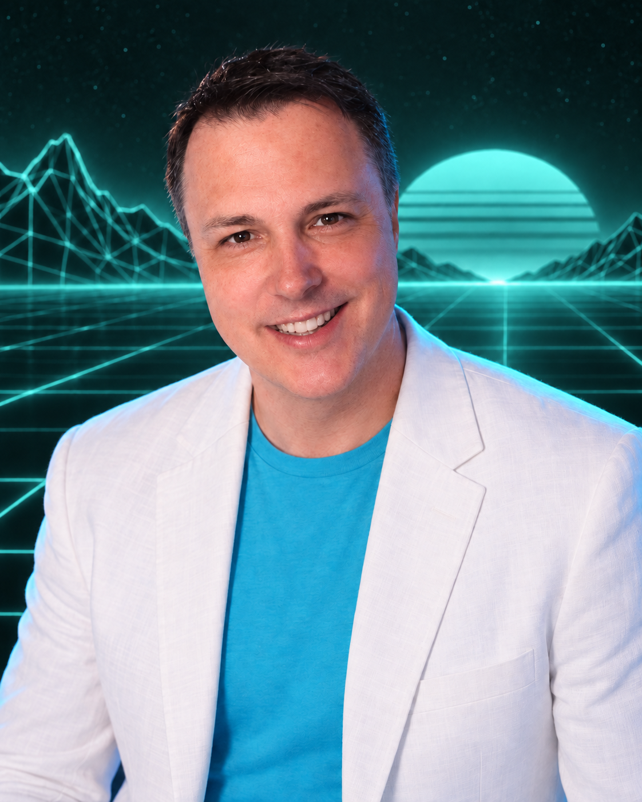
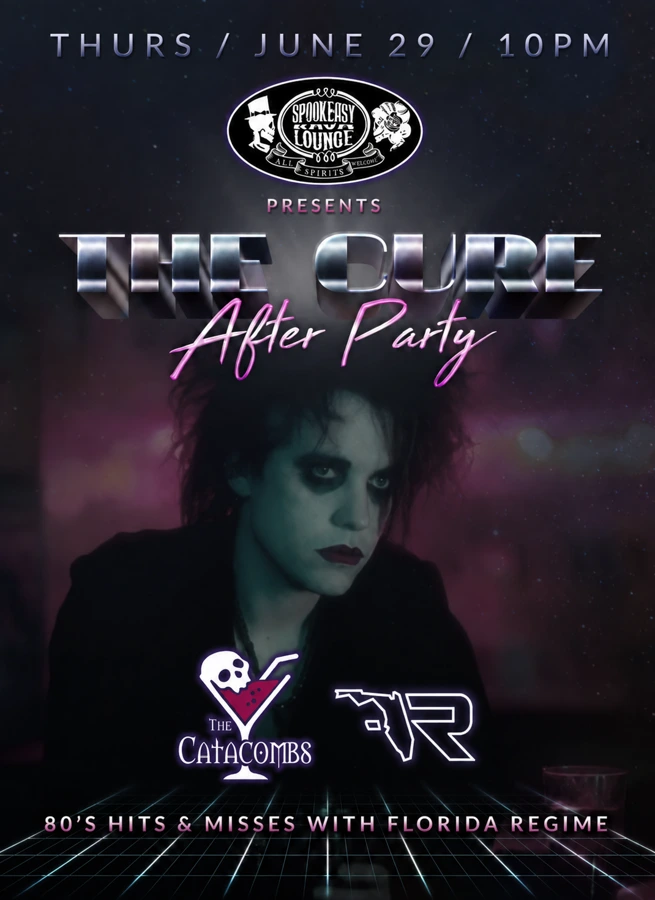

FICTION & WORLD BUILDING
Cyber Byzantium.

PUBLISHED · AVAILABLE ON AMAZON
Thirty Pieces of Silver.
An empire that never fell. The opening book in Spirits in the Silicon is available on Amazon.
Spirits in the Silicon is an alternate-history cyberpunk sequence I’m creating with Travis J. I. Corcoran. In this world, the Roman Empire survives into an age of electricity, cybernetics, relic hunters, and neon-lit Constantinople.
The project brings together fiction, Byzantine history, cover design, and AI art. I build the visual language alongside the world itself, developing custom Stable Diffusion extensions and checkpoints as part of that creative practice.
Thirty Pieces of Silver begins the sequence. Divine Transmission and Heretics of the Catacombs continue the world’s development.
NOVELS IN PROGRESS
Dawn Nebula.
Dawn Nebula is a science-fantasy series I’m writing, exploring space, empire, and imagined futures. These are books in progress; the cover artwork is part of developing their worlds and bringing the stories to life.

Ironclad of Dawn
Book 01 Writing in progress

Throne of Dawn
Book 02 Writing in progress

Emergence from Dawn
Book 03 Writing in progress
FLORIDA REGIME
Made for another kind of connection.

DJ. Producer. Audio engineer.
My music work spans Central Florida venues, outdoor events, and livestreams. As Florida Regime, I bring together DJ performance and electronic music production, with a focus on trance, tropical house, and synthwave.
I’ve performed at Ybor City venues including The Castle, Honeypot, and Gaspar’s Grotto. Sound, lighting, visual identity, and performance are all parts of the experience.
Alongside music production and mastering, I offer voiceover services for videos, product explainers, and audiobooks. Recording, editing, and a finished mix are all part of the work.

Florida Regime / The visual identity
A sound with its own signature.
I built the brand around the music: a recognizable identity across the logo, business cards, booth, flyers, and website. Tropical color and atmospheric artwork connect the live performance with its digital presence.




Listen / Florida Regime — Trance: 001
Video production / Voiceover
Picture. Voice. Impact.
Video that makes the story clear.
I produce marketing films and product demonstrations, bringing visuals, editing, sound, and narration together. My BagsID work includes video for the website and presentations at national and international conferences.
A voice for the work.
I also offer voiceover services for marketing videos, product explainers, and audiobooks, alongside audio editing and mastering. I narrated the BagsID film below.
Discuss video or voiceover work →